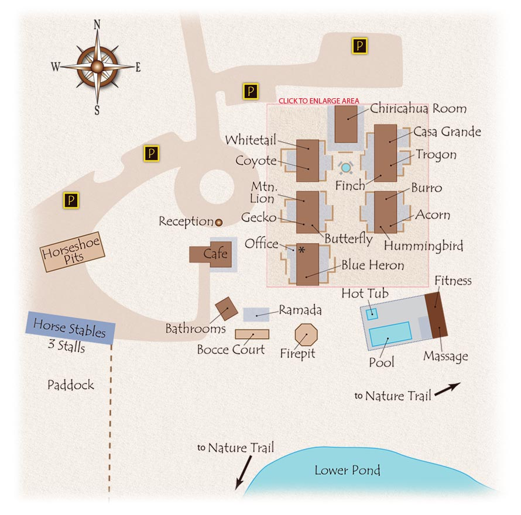

Have A Look At Our Property

Parking Info
There are two main sections for parking: day parking for those who are using our facilities and night parking
for those who have a rental property with us and will be staying for at least one night. If you need night parking you will be assigned a spot upon checking in.
Nature Trails
You can find trail specific maps at our office. Please do not enter the any trail without proper preperation
you should not be alone and you should have a map of your desired trail.